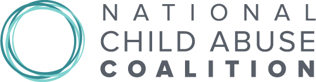

Remarque's goal is to provide a place where you can talk about your problems with others.
Usually, this will provide a solution to what you were looking for. However, this is not always the case.
Sometimes, you need real, professional help, and we are here to provide it to you.
Here is a list of links for you to go to if you need any help for your mental health or your situation.
Just like how physical health is important, mental health is as well, and there are doctors to help you.
| organization | description |
|---|---|
Every year, more than 3 million cases of child abuse are reported, while many more fly under the radar. Childhelp is dedicated to put an end to that statistic. Their goal is to meet the physical, emotional, educational, and spiritual needs of abused, neglected and at-risk children. They focus on prevention, intervention, and treatment for abused children, so these kids can experience a life filled with love. |
|
Prevent Child Abuse America’s mission is to prevent the abuse and neglect of American Children. They have a network of branches for each state that focuses on providing services for children that will reduce the negative effects of child abuse later in life. They are able to reach out to 100,000 families a year with their home visiting program, in order to create their vision of a nation in which no child is ever abused or neglected will become a reality. |
|
|  | The national child abuse coalition seeks to prevent child abuse, neglect, and maltreatment before child protective services (CPS) need to intervene while also working to protect and support children who come into attention with CPS. They advocate on behalf of legislation, policies, and programs by educating members of the congress and administration. |
The National Suicide Prevention Lifeline is a national network of local crisis centers that provides free and confidential emotional support to people in suicidal crisis or emotional distress 24 hours a day, 7 days a week. Their site is also filled with resources for specific groups of people, and youth is one of the categories. If you are in a crisis, call 1-800-273-TALK(8255) to talk to someone. |
|
The American Foundation for Suicide Prevention (AFSP) is a voluntary health organization that gives those affected by suicide a nationwide community empowered by research, education and advocacy to take action against this leading cause of death. They are dedicated to saving lives by funding scientific research, educating the public, advocating for public policies, and supporting those affected. |
|
67% of LGBTQ youth have heard their loved ones making negative comments about LGBTQ people. If you’re feeling unsafe, check out The Trevor Project, the leading national organization providing crisis intervention and suicide prevention services to lesbian, gay, bisexual, transgender, queer & questioning (LGBTQ) young people under 25. They work to end suicide among LGBTQ people by providing crisis counseling, offer support, educate people, and advocate for laws and policies. If you are a young person in crisis, feeling suicidal, or in need of a safe and judgment-free place to talk, call the TrevorLifeline now at 1-866-488-7386. |